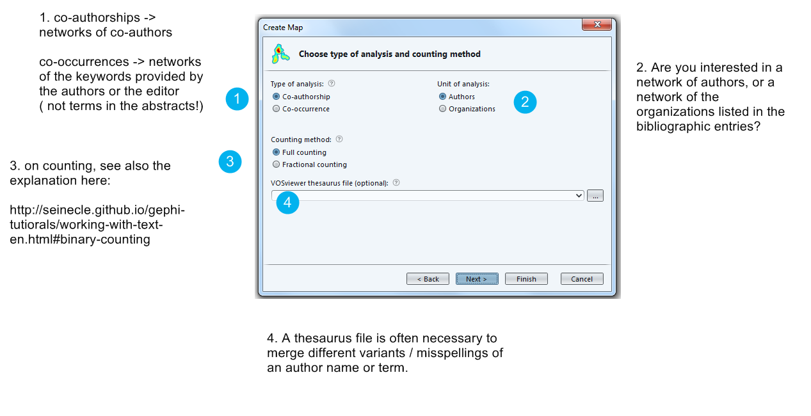
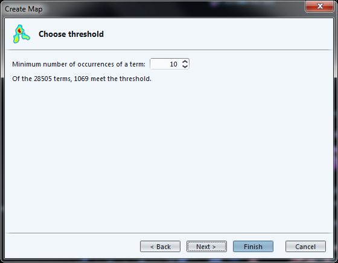

import metaknowledge as mk
import networkx as nx
import matplotlib.pyplot as plt
%matplotlib inline
import metaknowledge.contour as mkv
import pandas
RC = mk.RecordCollection("pubmed_medline.txt")
for R in RC:
if 'AB' in R.keys():
print(R['AB'])
print('\n')Tutorial de VOSviewer
Fecha: 2-08-24
Camila Escudero, tomado de Clément Levallois
Presionar 'o' o 'Escape' para ver todas las diapositivas, 'F11' para pantalla completa
Presentación de este tutorial
Este tutorial explica como crear un mapa semántico como este:

Figura 1. un mapa creado con VOSviewer
VOSviewer es un software desarrollado por Nees Jan van Eck y Ludo Waltman, investigadores en CWTS Leiden de la Universidad de Leiden.
El software fue creado para el análisis de datos bibliométricos (estudio científico de la actividad científica), pero el mismo tiene una relevancia más amplia
VOSviewer es particularmente bueno produciendo mapas semánticos de cualquier tipo, no solo de sets de datos bibliométricos.
Importar un set de datos
Se pueden usar tres métodos:
-
Importar datos de naturaleza bibliométrica (Web of Knowledge, Scopus, Medline o RIS)
-
importar un texto, donde cada párrafo se considera como una "unidad de texto" para computar co-occurrencias.
-
Importar tus propias networks (creadas por ejemplo con Gephi, etc.)
Veamos como funcionan los dos primeros métodos.
1. Importar set de datosbibliométricos (WoK, Scopus, etc.)
Necesitamos un set de datos bibliométricos para practicar.
Descargue este archivo zip y extraigalo en su computadora.
El archivo pubmed_medline.txt dentro del zip contiene 1484 artículos de
investigación de
la base de datos PubMed de reportes científicos, encontrados al realizar esta búsqueda:
"social neuroscience" OR "neuroeco*" OR "decision neuroscience"
→ La búsqueda puede ser vista aquí.
Figura 2. Siga al asistente para subir datos bibliométricos - 1
Prepare su archivo pubmed_medline.txt como se indica a continuación:

Figura 3. Siga al asistente para subir datos bibliométricos - 2
En este paso debes elegir que tipo de network te interesa.
- TIP
-
Cuidado, una network de co-occurrencias de palabras clave no usa los abstracts de las entradas bibliograficas, sino sólo las palabras clave indicadas por los autores o el editor. Esto típicamente es mucho menos informativo. Existen otras formas en VOSviewer para trabajar con abstracts.

Figura 4. Siga al asistente para subir datos bibliométricos - 3
Full Counting: cada ocurrencia de un elemento (un término, un autor, una publicación) se cuenta individualmente. Por ejemplo, si un autor tiene 10 publicaciones y cada una de ellas tiene 5 citas, el número total de citas contadas para ese autor sería 50 (10 publicaciones × 5 citas cada una)
Binary Counting: solo se cuenta la presencia o ausencia de un elemento, sin importar cuántas veces aparece. Por ejemplo, si un autor tiene 10 publicaciones y cada una con 5 citas, el n° de citas contadas para ese autor sería 10, ya que cada publicación se cuenta solo una vez. Ventaja: Elimina el sesgo causado por la frecuencia de ocurrencia, enfocándose en la simple presencia de los elementos. Evita que los elementos muy frecuentes dominen el análisis.
Función del archivo thesaurus:
Normalización de Términos: Ayuda a unificar diferentes variaciones de un mismo término. Por ejemplo, los términos "AI", "A.I.", "Artificial Intelligence" pueden ser tratados como uno solo.
Agrupación de Sinónimos: Agrupa términos sinónimos bajo una misma etiqueta. Por ejemplo, "cáncer de mama" y "neoplasia mamaria" pueden ser tratados como equivalentes.
Desambiguación de Términos: Distingue entre términos que pueden tener múltiples significados. Por ejemplo, "Java" (lenguaje de programación) y "Java" (isla en Indonesia) pueden ser diferenciados.
Estructura de un archivo thesaurus:
Es un texto plano, donde cada línea contiene una pareja de términos. El formato puede variar según la aplicación, pero a menudo se presenta así:
Término original | Término normalizado
Ejemplo:
AI | Artificial Intelligence
A.I. | Artificial Intelligence
Python|Python (programming language)
Python|Python (snake)
Eligiendo la opción de autores, hay que decidir que tan frecuentemente un autor deberia aparecer en el dataset para ser incluido en la visualización. Aquí, quienes tienen autoría de menos de 5 papers en la colección quedarán afuera.

Figura 5. Siga al asistente para subir datos bibliométricos - 4
Aquí puedes decidir que los autores que están débilmente conectados con otros (porque no coautoraron mucho) pueden ser excluidos.

Figura 6. Siga al asistente para subir datos bibliométricos - 5
La siguiente pantalla es una tabla para recapitular qué autores se van a incluir en la visualización.
Notamos que hay duplicados (luo yj y luo y), lo que significa
que deberíamos haber usado thesaurus para unirlos anteriormente.

Figura 7. Siga al asistente para subir datos bibliométricos - 6
El último paso del asistente es una invitación para mostrar solo el grupo más grande de autores conectados. Grupos más pequeños, aislados del grupo grande, serían descartados.
Clickear en "No" asegura que veamos todos los grupos.

Figura 8. Siga al asistente para subir datos bibliométricos - 7
El resultado es una network hecha de grupos de autores y sus conexiónes, correspondiendo al hecho de que ellos co-autorearon papers.
Los nodos más grandes representan autores con más publicaciónes.
El fondo puede ser cambiado a negro - puede facilitar la lectura.

Figura 9. Siga al asistente para subir datos bibliométricos - 8
Antes de entrar en detalles de visualización, veremos como importar otros tipos de fuentes de datos:
2. Importar un archivo de texto (de naturaleza bibliométrica o no)
Necesitamos un dataset para practicar.
El conjunto de datos debe ser un único archivo de texto, donde cada unidad de texto es un párrafo. La red se formará con los términos más frecuentes en la red. Los términos que aparezcan en los mismos párrafos estarán conectados.
Vea esta página para más precisiones en unidades de texto / párrafo.
descargue este archivo zip y extraiga su contenido en su computadora.
El archivo pubmed_abstracts.txt dentro del zip contiene 1484 abstracts (pequeños
resumenes) de papers de la abse de datos PubMed, encontrados al realizar esta bísqueda:
"social neuroscience" OR "neuroeco*" OR "decision neuroscience"
→ La búsqueda puede ser vista en: online here. (la búsqueda devuelve más de 1484 resultados, algunos artículos no titenen abstract).
Como nota al margen, estos resúmenes se extrajeron de los registros de PubMed de la siguiente manera:
-
Instalando Anaconda, una herramienta para Python con muchas cosas útiles en ella
-
Instalando Metaknowledge, una herramienta bibliométrica de Python
-
Corriendo esto en Jupyter notebook:

Figura 10. Uso de Metaknowledge para extraer abstracts de los registros
Seguimos al asistente que creará el mapa semántico:

Figura 11. Seguimos al asistente - 1
Debemos elegir el formato del archivo de entrada.
Formato VOSviewer: aquí podemos cargar un archivo hecho de párrafos:
Figura 12. Elegir el formato VOSviewer
VOSViewer tiene funcions bibliométricas, que permiten extraer abstracts directamente de entradas de MEDLINE (o Scopus, Web of Knowledge…)
Entonces para este ejemplo podemos usar el archivo que teniamos al inicio de este tutorial
(pubmed_medline.txt) y elegir el formato PubMed:
Figura 13. Elegir el formato PuMed
Cargar un archivo en el formato PubMed / Medline permite un mejor control:
-
Nos consulta si deseamos cargar abstracts, títulos, o ambos
-
eliminará las declaraciones de derechos de autor por nosotros (como "Copyright @Elsevier 2016") que a menudo contaminan el texto.

Figura 14. Elegir el formato PuMed
En la siguiente pantalla, como antes, pregunta si preferimos binary or full counting, y si tenemos un archivo thesaurus.
Debemos elegir una frecuencia mínima de un término (número de ocurrencias en total) para que sea incluida en el mapa:

Figura 15. Frecuencia mínima para que un término sea incluido
La siguiente pantalla nos invita a seleccionar los términos más "relevantes", con un parámetro puesto en un valor de default.
Aunque la definición de "relevancia" es difícil de explicar brevemente, su idea básica es que un término es más relevante cuanto más tiende a asociarse con palabras específicas, y no con todas las palabras por igual.
Los desarrolladores de VOSviewer explican su enfoque aquí.

Figura 16. Seleccionar las palabras más relevantes
La ultima pantalla del asistente recapitula en una tabla los términos que serán incluidos en el mapa, rankeado por relevancia.
Figura 17. Tabla de recapitulación
El resultado:

Figura 18. Resultado - el mapa semántico
3. Importar una red (formato gml o pajek)
Esta parte no se desarrollará en este tutorial ya que es directa: si tienes un archivo en formato gml o pajek, solo lo importas.

Figura 19. Importar una red
-
El manual de VOSviewer se incluye como un archivo pdf cuando se descarga el software.
Fin!
A
tutorial for vosviewerlast modified: 2017-03-30
Clément Levallois